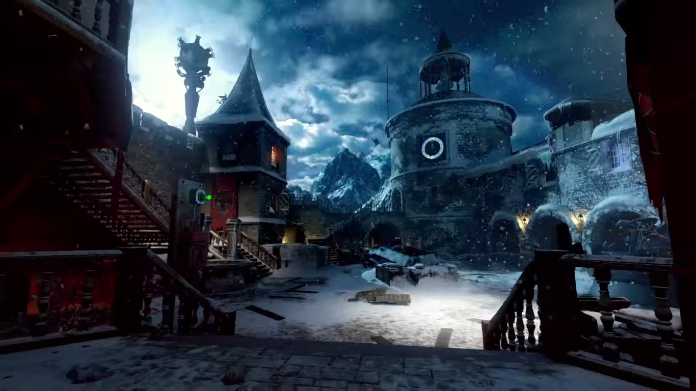
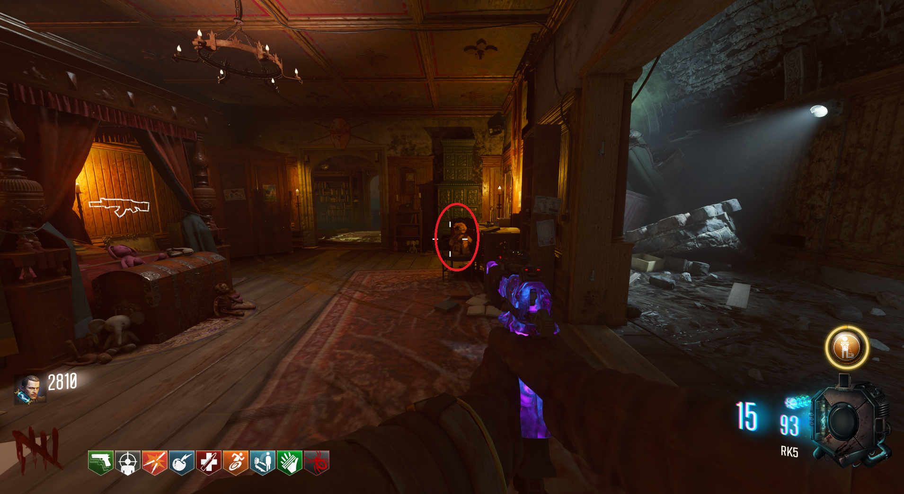
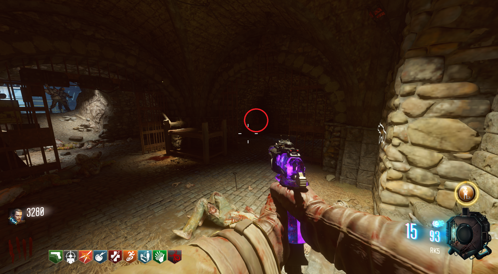
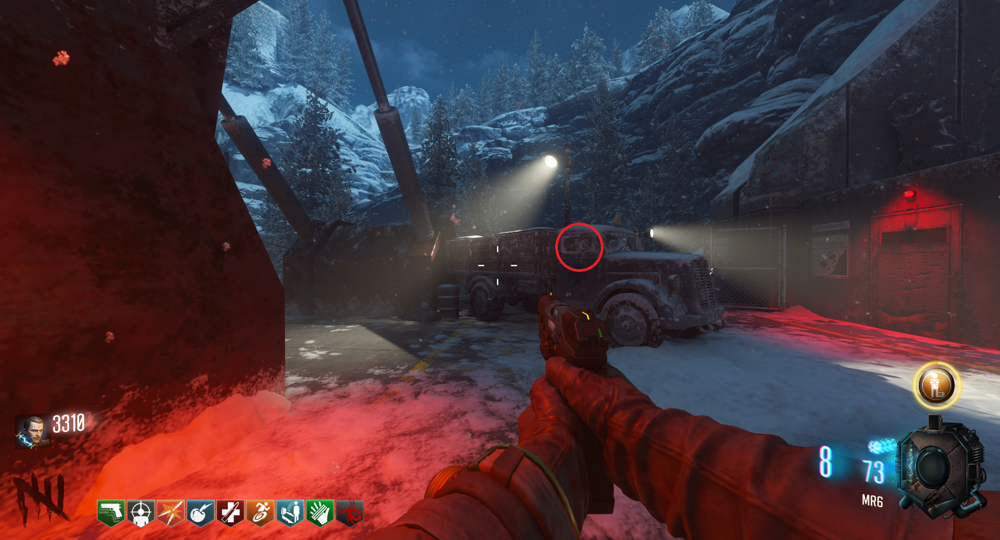

Canción Secreta (Der Eisendrachen)

Reproducir canción
Tendremos que interactuar con tres osos repartidos en el mapa para que empiece a sonar.
En el cuarto de Samantha.

Entre el Quick Revive y la zona de la gravedad.

En la zona del cohete, dentro del camión.
